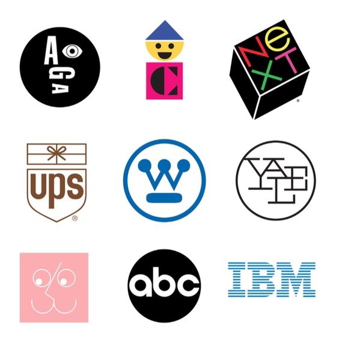
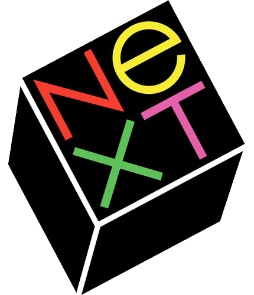

From 1941 to 1954 Rand worked as art director of the William H. Weintraub advertising agency.
Creates iconic advertising work for Dubonnet, Olivetti and many others.
Paul Rand Arrives: 1960—1970

Some of Paul Rand's most notable logos from this period include UPS, Westinghouse, ABC, IBM, Cummins.
When Rand finished his design for the UPS logo, he showed it to his young daughter and asked her what it was. She replied, "It's a present, daddy!" He knew then that he nailed it.
Writes Design and the Play Instinct
Publishes his first children's book.
Multiple exhibitions of his work amid a growing appreciation for commercial art.
Awarded the AIGA gold medal in 1965.
Act Three: 1971—1996

In 1986, Steve Jobs recruited renowned graphic designer Paul Rand to create a brand identity costing $100,000. (Crazy at the time!) Rand created a 100-page brochure detailing the brand, including the precise angle used for the logo (28°) and a new company name, NeXT.
Paul Rand was a complete badass. Aside from his history-making design fees, he also did not do deadlines. The design would be done when it was done, and he was so confident in his perfect solution that he only presented a single option.